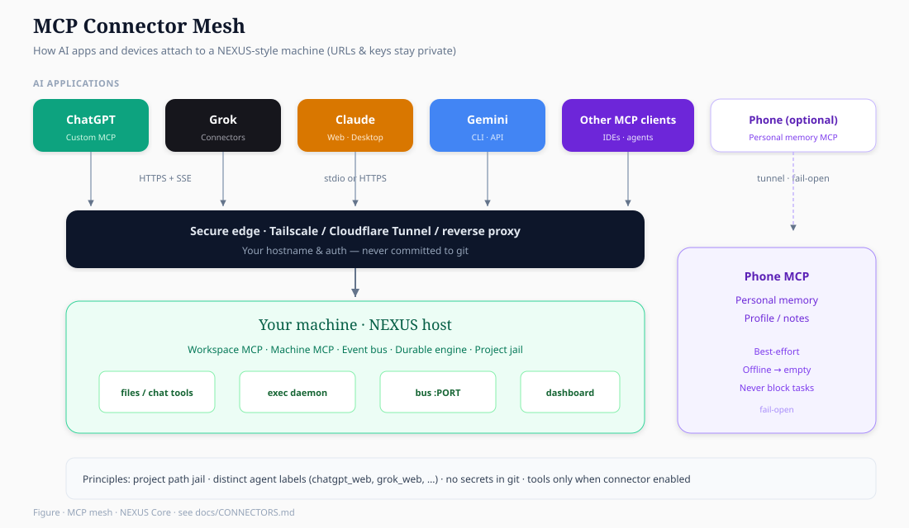
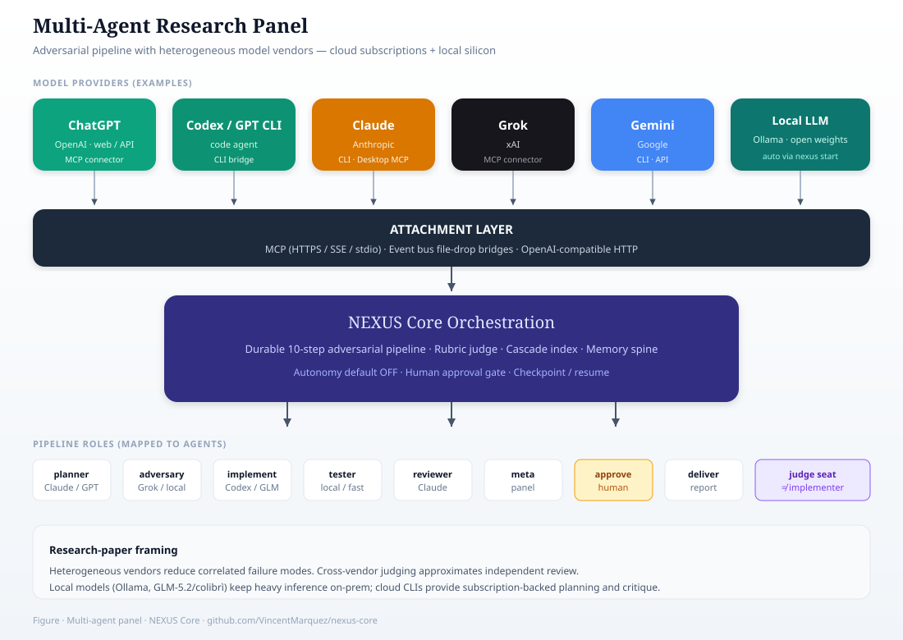

Connectors & MCPs¶
How NEXUS-style systems attach AI subscriptions, local tools, and phones — without putting secrets in git.
This is the architecture pattern. Every URL, token, and hostname stays in your env / tunnel config.
Big picture¶


┌──────────────────────────────────────────────────────────────────────┐
│ AI apps (subscriptions you already pay for) │
│ ChatGPT · Claude · Grok · Gemini · other MCP clients │
└───────────────┬──────────────────────┬───────────────────────────────┘
│ MCP over HTTPS/SSE │ MCP over stdio (desktop)
│ (remote connector) │ (local command)
▼ ▼
┌──────────────────────────┐ ┌────────────────────────────────────────┐
│ Edge / tunnel │ │ Machine MCP process │
│ Tailscale / Cloudflare │ │ node claude-machine-mcp.js │
│ Funnel / HTTPS reverse │ │ or python -m science_mcp │
│ proxy │ └─────────────────┬──────────────────────┘
└────────────┬─────────────┘ │
│ │ tools: files, queue,
▼ │ memory search, …
┌────────────────────────────┐ │
│ Workspace / project host │◄─────────────────┘
│ (your PC / lab machine) │
│ · event bus (:PORT) │
│ · CLI bridges │
│ · Ollama local LLM │
│ · durable engine │
└────────────┬───────────────┘
│ optional secure tunnel
▼
┌────────────────────────────┐
│ Phone (optional) │
│ Personal memory MCP │
│ (profile / notes / PEM) │
│ offline → fail open │
└────────────────────────────┘
Connector types¶
| Kind | Transport | Typical client | Role |
|---|---|---|---|
| Workspace MCP (remote) | HTTPS + SSE | ChatGPT, Grok, Claude web “custom connector” | Read/write project files, workspace chat, handoff between agents |
| Machine MCP (local stdio) | stdio JSON-RPC | Claude Desktop / Claude Code | Shell queue, local files, tighter machine control |
| Science / tools MCP | HTTPS or stdio | Any MCP client | Domain tools (papers, APIs) with their own auth |
| Phone memory MCP | HTTPS via tunnel | Any MCP client | Personal context on your phone; best-effort |
| Event bus bridges | HTTP + file-drop | NEXUS Core bridge/ |
CLI agents + Ollama + GLM-5.2/colibrì |
| Heavy local MoE | OpenAI-compatible HTTP or CLI | colibrì coli serve |
GLM-5.2 as agent glm52 — see GLM52.md |
NEXUS Core ships the bus + local LLM path in-repo.
MCP servers are patterns + example configs you host yourself.
1. Remote Workspace MCP (AI web apps)¶
Idea: one HTTPS endpoint on your machine (or tunnel) that speaks MCP over SSE.
What clients do¶
| App | Where you add it |
|---|---|
| ChatGPT | Settings → Connectors / Apps → Custom MCP → paste URL |
| Grok | grok.com → Connectors → New → Custom → paste URL |
| Claude | Connectors / custom MCP URL when available, or Desktop stdio (below) |
What the server typically exposes¶
Generic tool names (examples):
| Tool | Purpose |
|---|---|
list_project_files |
Browse project tree |
read_project_file |
Read a file |
write_to_project |
Write/update a file |
read_workspace_chat |
Recent multi-agent chat |
send_to_workspace |
Post a message as this agent |
Critical rule¶
Tools only work when the connector is actually enabled in that chat.
Prompt text alone does not grant tool access — if tools are missing, say so; don’t fake tool output.
Identity when posting to a shared workspace¶
Always set a stable agent id per product:
agent: "chatgpt_web" | "grok_web" | "claude_web" | "gemini_web"
So logs show which subscription wrote the message.
Security pattern¶
- Prefer private tailnet or authenticated tunnel (not a naked public open proxy).
- Scope tools to a project root (path jail).
- No shell by default on the remote MCP (use Machine MCP for shell).
Example env (yours, not committed):
export NEXUS_MCP_URL="https://<your-host-or-tunnel>/mcp"
export NEXUS_PROJECT_ROOT="/path/to/your/project"
Template: connectors/examples/workspace-mcp.client.json
2. Machine MCP (Claude Desktop / local)¶
Idea: Claude (or another desktop client) runs a local command that speaks MCP on stdio.
Client --stdio--> node machine-mcp.js --> exec daemon / files
Typical tools¶
| Tool | Purpose |
|---|---|
run_command |
Queue a shell job to a supervised daemon |
read_file / write_file |
Project-scoped I/O |
list_dir |
Browse |
Why a daemon for shell¶
Desktop MCP processes are short-lived; a user service / long-running daemon watches a command queue and writes results. That keeps permissions and timeouts under your control.
MCP tool run_command
→ append commands.jsonl
→ daemon executes
→ results/<id>.json
→ tool returns output
Claude Desktop config shape¶
{
"mcpServers": {
"nexus-machine": {
"command": "node",
"args": ["/absolute/path/to/machine-mcp.js"],
"env": {
"NEXUS_PROJECT_ROOT": "/absolute/path/to/project"
}
}
}
}
Template: connectors/examples/claude-desktop.mcp.json
3. Phone / personal memory MCP (optional)¶
Idea: a small MCP server runs on your phone (or a pocket device) holding personal memory / profile / notes. The lab machine reaches it through a secure tunnel.
AI app or research script
│
▼
HTTPS tunnel (Tailscale / Cloudflare / …)
│
▼
Phone MCP (localhost on device)
Design rules¶
| Rule | Why |
|---|---|
| Fail open | Phone offline → empty context, don’t crash jobs |
| Separate namespace | Never mix personal memory with public project tools carelessly |
| No secrets in git | Only PERSONA_MCP_URL (or similar) in env |
| User owns the data | Phone is source of truth for personal state |
From Python (pattern)¶
# pseudocode — your client, your URL
try:
hits = phone_mcp.search("relevant context", top_k=3)
except NetworkError:
hits = [] # fail open
Template env:
export PHONE_MCP_URL="https://<your-tunnel>/mcp"
# optional tailnet fallback when public tunnel is down
export PHONE_MCP_TAILNET_URL="http://<phone-on-tailnet>:PORT/mcp"
4. Science / domain MCPs¶
Separate MCP servers for domain tools (literature, APIs, lab instruments).
They should:
- use their own API keys via env
- stay optional so core NEXUS runs without them
- register as additional connectors in ChatGPT/Claude/Grok
Template: connectors/examples/science-mcp.client.json
5. Event bus + AI CLIs (in this repo)¶
Not MCP, but the same “connect what you already pay for” idea:
| Subscription / runtime | How it attaches |
|---|---|
| Ollama (local free weights) | nexus start auto-detects + bridges as agent local |
| Claude Code CLI | nexus start --with-cli if claude is on PATH |
| Codex / GPT CLI | same, agent slot gpt |
| Gemini CLI | same, agent slot gemini |
Auth stays in your CLI login / env — the bus never stores keys.
See BRIDGES_AND_BUS.md and nexus start --help.
How the pieces fit with NEXUS Core¶
| Layer | Component |
|---|---|
| Run tasks | nexus.engine durable pipeline |
| Local models | Ollama bridge |
| Paid CLIs | CLI bridges (opt-in) |
| Web AI apps | Remote Workspace MCP (you host) |
| Desktop AI | Machine MCP stdio (you host) |
| Phone context | Phone MCP (optional, fail-open) |
| Dashboard | nexus start → browser |
nexus start
→ hardware detect
→ Ollama up + model
→ JS bus + dashboard
→ local bridge online
→ (optional) CLI bridges
Separately (your deploy):
→ expose Workspace MCP URL to ChatGPT / Grok / Claude
→ run Machine MCP for Claude Desktop
→ tunnel Phone MCP if you use personal memory
Minimal multi-client checklist¶
- Local stack works:
nexus start -y→ dashboard opens →call_bus.py --agent local - Tunnel / HTTPS for remote MCP (Tailscale Serve/Funnel, Cloudflare Tunnel, Caddy, …)
- Add connector URL in each AI app you subscribe to
- Per-agent identity on workspace messages
- Phone MCP optional — fail open when offline
- Never commit tokens, tailnet names, or home paths
What we do not publish¶
- Real hostnames, tailnet IDs, or phone device names
- API keys, OAuth tokens, cookies
- Personal memory contents or private project data
Those stay on your devices. This doc is the map.